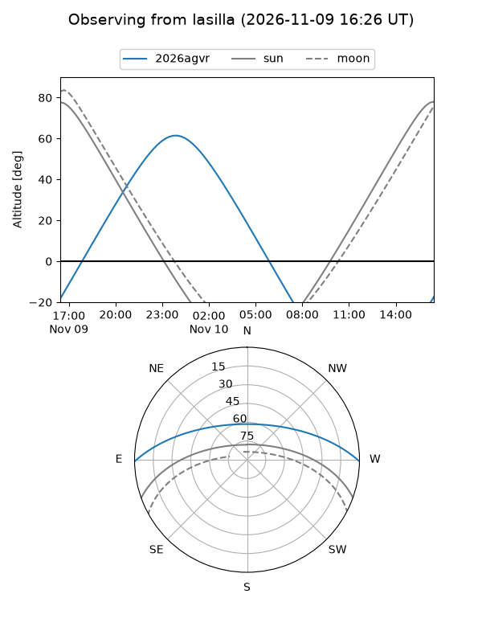
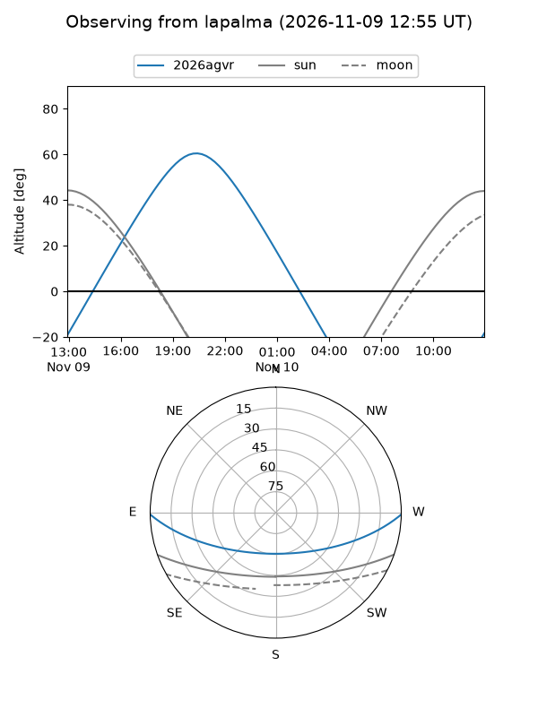
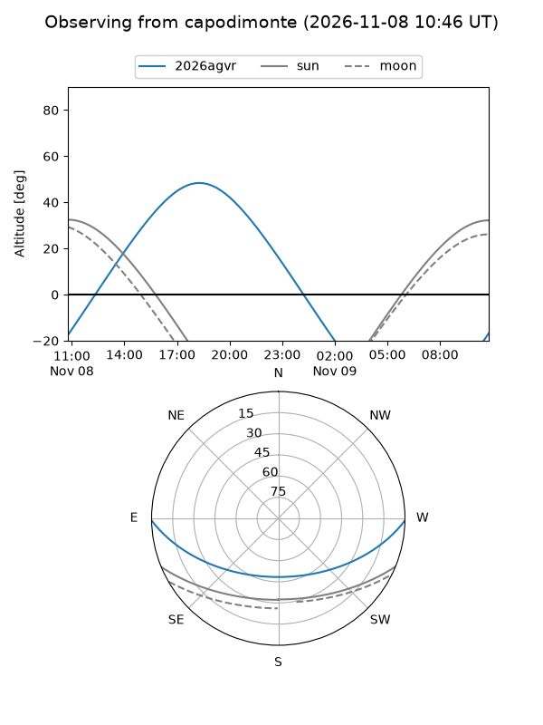
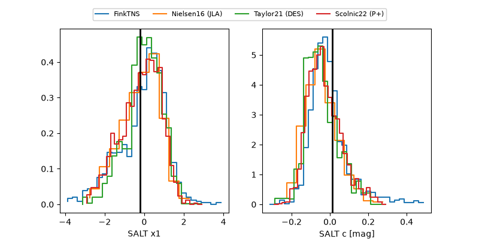

2026agvr
Target 2026agvr at 2026-11-08 02:24
Aliases and brokers:
FINK-ZTF: ztf.fink-portal.org/ZTF26acczfjl
Lasair-ZTF: lasair-ztf.lsst.ac.uk/objects/ZTF26acczfjl
ALeRCE-ZTF: alerce.online/object/ZTF26acczfjl
YSE-PZ: ziggy.ucolick.org/yse/transient_detail/2026agvr
TNS name: wis-tns.org/object/2026agvr
Direct TNS query: direct search
alt names
ZTF26acczfjl (ztf,fink_ztf)
2026agvr (tns,yse)
PS26kne (panstarrs)
Coordinates:
equatorial (ra, dec) = 335.9693,-0.87050
equatorial (HMS+DMS) = 22:23:52.64,-00:52:13.79
galactic (l, b) = (63.2597,-45.94288)
Flags:
TNS type: SN Ia
TNS redshift: 0.0620
peak dt: +11.4
Photometry:
last atlasc=18.06, atlaso=18.08, ztfg=18.36, ztfr=18.11
3 atlasc, 9 atlaso, 4 ztfg, 4 ztfr detections
Lightcurve
Visibility



Additional plots
